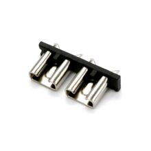

Разъёмы
Держатель автомобильного предохранителя Medium, на плату 32В
Это PCB-держатель под автомобильный предохранитель типа ATO/ATC (стандартный blade fuse). Он нужен для установки и замены предохранителя прямо на плате в цепях защиты питания.

Документация
Характеристики
Тип предохранителя
ATO / blade fuse
Монтаж
на плату (PCB mount)
Максимальное напряжение
32 В DC
Номинальный ток
15 А или 30 А, в зависимости от исполнения
Назначение
защита цепей питания
Тип контактов
пайка в плату
Совместимость
стандартные автомобильные ножевые предохранители ATO
Материал корпуса
термостойкий пластик, UL 94 V-0 (для семейства FLR)
Подробнее
Деталь представляет собой держатель автомобильного ножевого предохранителя формата ATO для монтажа на печатную плату. Такие держатели применяются в автомобильной электронике, блоках питания и других низковольтных устройствах, где требуется быстрое обслуживание предохранителя. Конструкция обычно рассчитана на пайку в плату и фиксацию корпуса держателя до пайки. В зависимости от исполнения встречаются варианты на 15 А или 30 А и рабочее напряжение до 32 В DC. Вставляемый предохранитель приобретается отдельно.
hw-2026-148